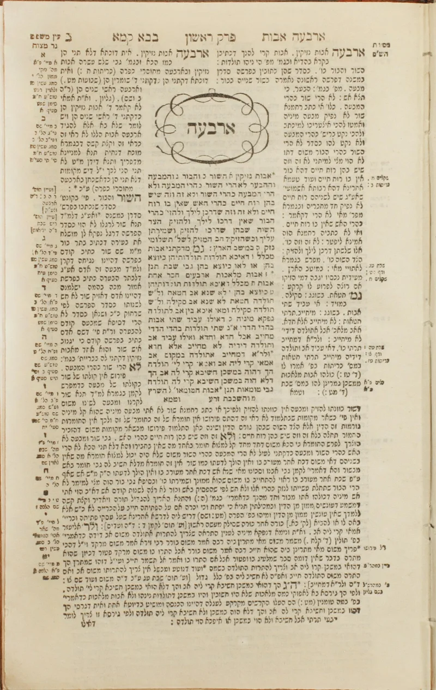
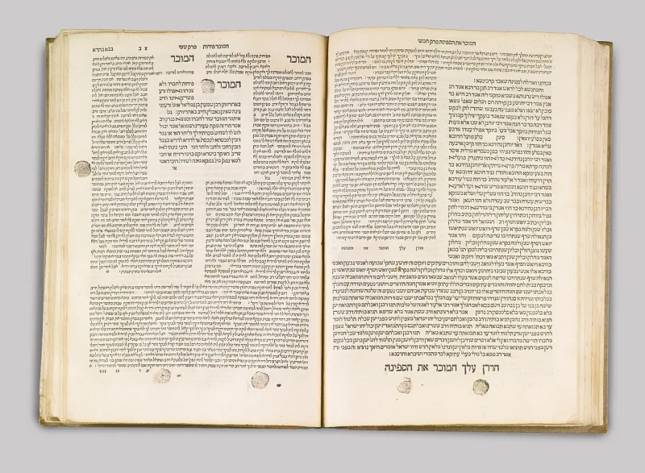

'Whom they have pierced' — Zechariah 12:10
ConcededJewish sources grant this themselves. You can make the point from their own books.
What the verse says
Zechariah 12:10 describes a day when God pours out grace on Jerusalem. Then it says something strange: "they shall look upon me whom they have pierced, and they shall mourn for him." The sentence starts with "me" and ends with "him."
It is odd before anyone argues
That shift is in the Hebrew itself. It is not a Christian translation trick.
God is the one speaking, and yet the mourning is for someone else. Jewish commentators have wrestled with it for centuries.
What Jewish sources make of it
The strongest thing here is not a Christian reading. The Talmud connects this mourning to Messiah son of Joseph — the Messiah who is killed.
That is the same figure from Sukkah 52a, and again it comes from inside Judaism.
How strong is this argument?
Very strong, because you can make it entirely from Jewish sources. That is the only kind of argument that travels in this conversation.
Why this helps you
A pierced figure, mourned by Jerusalem, read by Jewish sages as a Messiah who dies. That is a lot to set aside, and none of it depends on the New Testament.
What to say
"Why does Zechariah 12:10 switch from 'me' to 'him'? And what did the sages do with it?"



How they answer this — at its strongest
God is the speaker, they say, and God cannot be pierced.
The strongest reply comes from Tovia Singer, Rashi and the NJPS translation. The speaker is God — 'they shall look to Me' — and God cannot be pierced. The Hebrew word daqar here means slain in battle. So the verse describes national mourning at the end of history, over those who fell in the war of Gog and Magog. NJPS renders it 'they shall lament to Me about those who are slain.'
The phrase 'et asher' can mean 'concerning him whom.' That removes the puzzle of a pierced God entirely.
Rashi does cite the Messiah son of Joseph tradition. But he takes it as aggadah about a warrior killed at the end of history, not an atoning death under Rome. And some Hebrew manuscripts read 'look to him' rather than 'to me', which takes the Christian pivot away.
The verdict
Conceded — the Talmud itself ties this mourning to a Messiah who is killed.
Graded Conceded — Jewish sources grant the key point themselves. The Talmud ties this verse's mourning to a Messiah who is killed, at Sukkah 52a. That is the same link John 19:37 makes. Agreement from sources with no reason to help Christians is what gives this entry its force.
Handle the 'me' against 'him' question with complete honesty. The standard Hebrew text reads 'to me.' That is the harder reading, and the better attested one. Say so, rather than reaching for the manuscripts that make life easier.
Sources
- Sukkah 52a (Sefaria)
- Zechariah 12 (Sefaria, MT with translations)
- Michael Brown, Answering Jewish Objections to Jesus, vol. 3
- Jews for Judaism